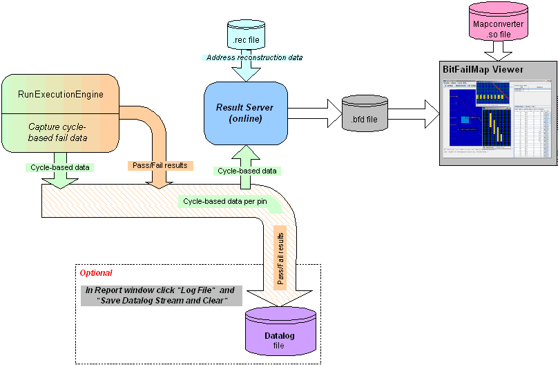

Debugging
For debugging you can interactively execute one test suite with immediate availability of address-based data for the BFM Viewer. To save the data log file, click in the report window on Log File and Save Datalog Stream and Clear. This workflow is shown in the figure below.

Set the test method parameters as described in Setting parameters for the ExecutionEngine test method.
Functional changes
- Introduced before SmarTest 6.3.2
- MTP 3.0.1: The ExecuteEngine test method replaces the Memtest test methods.